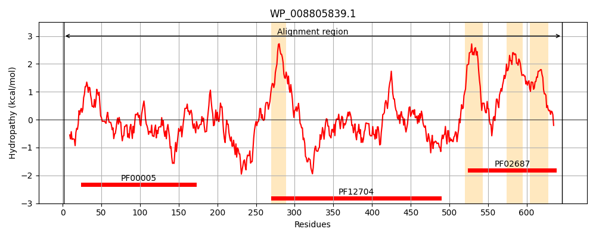
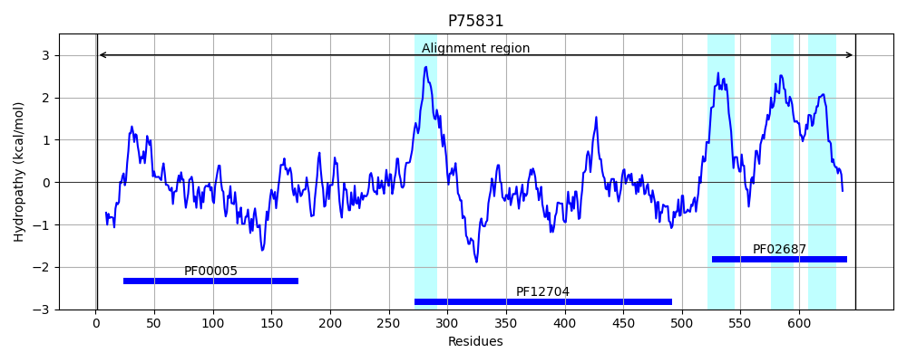
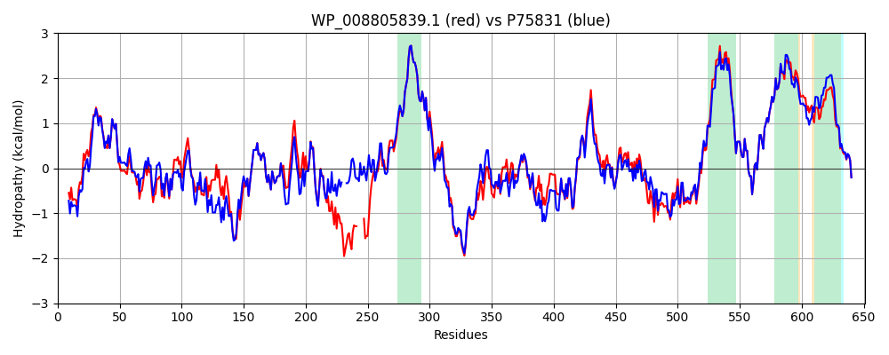

Hit Accession: P75831
Hit TCID: 3.A.1.122.1
Hit Description: gnl|BL_ORD_ID|11416 gnl|TC-DB|P75831|3.A.1.122.1 Macrolide-specific ABC-type efflux carrier - Escherichia coli.
Mach Len: 651
e:0.000000
Query TMS Count : 4
Hit TMS Count: 4
TMS-Overlap Score: 4.050000
Predicted Substrates:CHEBI:6207;L-cysteine, CHEBI:25106;macrolide, CHEBI:4841;erythromycin A, CHEBI:23888;drug
BLAST Alignment:
Score: 2768 , Bit scores: 1070 bits, E-value: 0.0e+00, Alignment length: 651, Percentage identity: 85
Query: 1 MTALLELRDIRRSYPSGDGSVEVLKGITLSINAGEMVAIVGASGSGKSTLMNILGCLDKPTSGTYRVAGTDIAQLNGDALARLRREHFGFIFQRYHLLSHLTAAQNVEVPAVYAGSERRARLARAHDLLVRLGLGDRADYQPSQLSGGQQQRVSIARALMNGGEVILADEPTGALDSHSGEEVMAILHQLKAQGHTVIIVTHDPQVAAQAERIIEIRDGEIVRNPPGSRQGGGLRARQQPEP-----SAWRQFTSGFREALVMAWRAMAANKMRTLLTMLGIIIGIASVVSIVVVGDAAKQMVLADIRAIGTNTIDVYPGKDFGDDDPRYQQALKYDDLLAIQKQPWVRSATPAVSKSLRLRANNIDVAASAEGVGPQYFNVYGMTFSEGNTFNELQLNSRAQVVVLDSNTRRQLFPNKAKVVGEVILVGNMPATVIGVADEKQSMFGSSKILRVWLPYTTMAGRVMGQSWLNSITVRVHEGYDSETAEKQLLRLLELRHGKKDVFTWNMDSILKTAERTTHTLQLFLTLVAVIALVVGGIGVMNIMLVSVTERTREIGIRMAVGARASDVLQQFLIEAVLVCLVGGALGVTLSLMIAFILQLFLPGWEIGFSPLALLTAFLCSTLTGVLFGWLPARNAARLDPVDALARE 646
MT LLEL+DIRRSYP+GD VEVLKGI+L I AGEMVAIVGASGSGKSTLMNILGCLDK TSGTYRVAG D+A L+ DALA+LRREHFGFIFQRYHLLSHLTA QNVEVPAVYAG ER+ RL RA +LL RLGL DR +Y P+QLSGGQQQRVSIARALMNGG+VILADEPTGALDSHSGEEVMAILHQL+ +GHTVIIVTHDPQVAAQAER+IEIRDGEIVRNPP + + EP S WRQF SGF EAL MAWRA+AANKMRTLLTMLGIIIGIASVVSIVVVGDAAKQMVLADIR+IGTNTIDVYPGKDFGDDDP+YQQALKYDDL+AIQKQPWV SATPAVS++LRLR NN+DVAASA GV YFNVYGMTFSEGNTFN+ QLN RAQVVVLDSNTRRQLFP+KA VVGEVILVGNMPA VIGVA+EKQSMFGSSK+LRVWLPY+TM+GRVMGQSWLNSITVRV EG+DS AE+QL RLL LRHGKKD FTWNMD +LKT E+TT TLQLFLTLVAVI+LVVGGIGVMNIMLVSVTERTREIGIRMAVGARASDVLQQFLIEAVLVCLVGGALG+TLSL+IAF LQLFLPGWEIGFSPLALL AFLCST+TG+LFGWLPARNAARLDPVDALARE
Sbjct: 1 MTPLLELKDIRRSYPAGDEQVEVLKGISLDIYAGEMVAIVGASGSGKSTLMNILGCLDKATSGTYRVAGQDVATLDADALAQLRREHFGFIFQRYHLLSHLTAEQNVEVPAVYAGLERKQRLLRAQELLQRLGLEDRTEYYPAQLSGGQQQRVSIARALMNGGQVILADEPTGALDSHSGEEVMAILHQLRDRGHTVIIVTHDPQVAAQAERVIEIRDGEIVRNPPAIEK---VNVTGGTEPVVNTVSGWRQFVSGFNEALTMAWRALAANKMRTLLTMLGIIIGIASVVSIVVVGDAAKQMVLADIRSIGTNTIDVYPGKDFGDDDPQYQQALKYDDLIAIQKQPWVASATPAVSQNLRLRYNNVDVAASANGVSGDYFNVYGMTFSEGNTFNQEQLNGRAQVVVLDSNTRRQLFPHKADVVGEVILVGNMPARVIGVAEEKQSMFGSSKVLRVWLPYSTMSGRVMGQSWLNSITVRVKEGFDSAEAEQQLTRLLSLRHGKKDFFTWNMDGVLKTVEKTTRTLQLFLTLVAVISLVVGGIGVMNIMLVSVTERTREIGIRMAVGARASDVLQQFLIEAVLVCLVGGALGITLSLLIAFTLQLFLPGWEIGFSPLALLLAFLCSTVTGILFGWLPARNAARLDPVDALARE 648 | Protein Hydropathy Plots: |
|---|
|  |  |
Pairwise Alignment-Hydropathy Plot:
|
|---|
|  |